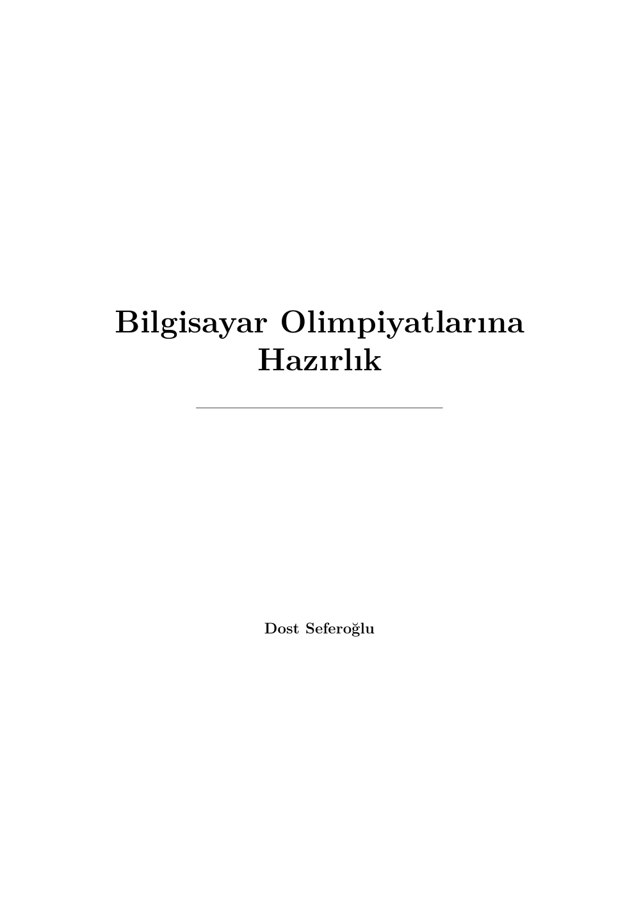
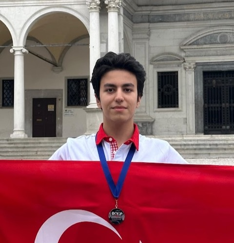

TÜBİTAK Bilgisayar Olimpiyatı · 1. Aşama
Bilgisayar Olimpiyatlarına Hazırlık
Kombinatorik, sayılar teorisi, düşünme teknikleri, algoritmik düşünce ve C programlama. TÜBİTAK Bilgisayar Olimpiyatı 1. Aşama sınavına hazırlanan bir öğrenciye, hiçbir önbilgi varsaymadan sıfırdan anlatan ve çözümlü örneklerle örülmüş kapsamlı bir kaynak.
- 568 sayfa
- 38 bölüm
- 7 kısım
- 119 alt konu
Tek dosya · B5 sayfa boyutu · Tıklanabilir içindekiler · Ücretsizdir, ücretsiz dağıtılabilir.

Kitabın kurgusu
Kitap yedi kısma ayrılmıştır ve her kısım bir öncekinin üzerine kurulur. Aşağıdaki sıra, müfredatın da sırasıdır; atlanarak okunduğunda bölümlerdeki atıflar havada kalır.
Sıfırdan Temeller
Kitabın geri kalanında kullanılacak dili ve ispat alışkanlığını kazandırmak.
Sayma / Kombinatorik
TÜBİTAK 1. Aşamanın en yoğun konusu olan saymayı sıfırdan ve derinlemesine kurmak.
Sayılar Teorisi
Bölünebilme, asal sayılar, EBOB/EKOK, modüler aritmetik, taban aritmetiği ve logaritma; sayı kuramının TÜBİTAK çekirdeği.
Düşünme Teknikleri
İmkânsızlık ve varlık ispatlarının olimpiyat teknikleri.
Algoritmik Düşünce
Programlamadan önce sözde kodla algoritma ve karmaşıklık kültürü.
C Programlama
Algoritmaları gerçek bir dille hayata geçirmek; TÜBİTAK'ın C sorularını okumak.
Alıştırma ve Ekler
Öğrenilenleri pekiştirmek ve TÜBİTAK formatına bağlamak.
Kitap nasıl kullanılır?
Sırayı bozmayın
Bölümler önkoşul zinciriyle bağlıdır: her bölüm yalnızca kendinden öncekilere dayanır. Bir bölümde zorlanıyorsanız sorun genellikle bir öncekindedir.
Örnekleri kâğıtta çözün
Çözümlü örnekleri okumak, çözmüş sayılmaz. Cevabı görmeden önce kendi yaklaşımınızı kurmayı deneyin; asıl kazanç orada oluşur.
Kodu çalıştırın
C bölümlerindeki kısa programları derleyip deneyin. Kitaptaki kodlar öğretici örneklerdir; amaç dili ve mantığı göstermektir.
Ekler'e dönün
Son bölümdeki formül listesi ve terimler sözlüğü, konuları tekrar ederken hızlı başvuru kaynağınızdır. Terimler kitap boyunca aynı adla kullanılır.
Künye
| Kitap adı | Bilgisayar Olimpiyatlarına Hazırlık |
|---|---|
| Yazar | Dost Seferoğlu |
| e-ISBN | 978-625-00-5243-3 |
| ISBN veren kurum | T.C. Kültür ve Turizm Bakanlığı · Kütüphaneler ve Yayımlar Genel Müdürlüğü |
| Hedef | TÜBİTAK Bilim Olimpiyatları · Bilgisayar dalı 1. Aşama sınavı |
| Kapsam | Sayma ve kombinatorik, sayılar teorisi, düşünme teknikleri, algoritmik düşünce, C programlama, çözümlü problemler, formül ve terim ekleri |
| Yapı | 7 kısım · 38 bölüm · 119 alt konu |
| Uzunluk | 568 sayfa (B5), tek PDF dosyası |
| Anlatım dili | Türkçe |
| Önkoşul | Yok — kitap sıfırdan başlar |
| Hazırlanışı | Yapay zekâ araçlarından yararlanılarak derlendi ve düzenlendi; müfredat, kapsam ve kalite denetimi yazara aittir (bkz. Hakkında) |
| Sürüm | Bu sayfa 24 Eylül 2026 tarihindeki derlemeden üretildi |
| Telif | © 2026 Dost Seferoğlu |
| Lisans | Creative Commons CC BY-NC-SA 4.0 — https://creativecommons.org/licenses/by-nc-sa/4.0/deed.tr |
| Ücret | Ücretsizdir |
Nasıl Çalışılmalı
Bu kitap nasıl çalışılmalı?
Bu kitap, sınava az kala okunup bitirilecek bir kaynak değil; masada kâğıt kalemle işlenmesi gereken bir çalışma kitabıdır. Aşağıdaki rehber, kendi hazırlık sürecimden ve alt dönemlerime verdiğim derslerden süzüldü.
- Öncelik etiketlerini kullanın. İçindekiler'de her bölümün yanında bir etiket var: Temel — sınavın omurgası, ilk önce bunlar bitirilmeli; Orta — temeller bittikten sonra; İleri — zaman kalırsa ya da 2. Aşama hedefleniyorsa. Vaktiniz daraldıysa önce tüm Temel bölümleri bitirin.
- Ana fikri kavrayınca hızlı ilerleyin. Bölümler önkoşul zinciriyle bağlıdır; sırayı bozmayın, ama her sayfayı kelime kelime işlemek zorunda da değilsiniz. Bir bölümün ana fikrini kavradıysanız ayrıntılarda oyalanmadan ilerleyin. Zorlandığınız yer genellikle bir önceki bölümdedir — dönüp orayı sağlamlaştırın.
- Önce kendiniz çözün, sonra çözümü okuyun. Her çözümlü örnekte cevaba bakmadan önce beş on dakika kendi yaklaşımınızı kurun. Takılırsanız çözümü okuyun, sonra kâğıdı kapatıp kendi cümlelerinizle yeniden çözün; kazanç o ikinci çözümdedir.
- Az ama düzenli çalışın. Haftada üç dört gün, günde bir iki saatlik düzenli tempo, bir aylık yoğun temponun yerini tutar. Konuların zihinde oturması zaman alır; sınav gecesi çalışması bu kitabın işleyişine uymaz.
- Her konuyu çıkmış sorularla ölçün. Bir bölümü bitirir bitirmez, o bölümle ilişkili geçmiş 1. Aşama sorularını çözün — hepsi Çıkmış Sorular sekmesinde bölüm bölüm listeli. Resmî arşivin tamamı Linkler sekmesinde. Konunun sınavda nasıl sorulduğunu görmek, hazırlığın en güçlü geri bildirimidir.
- C'ye erken başlamayın. Kitabın algoritma ve C kısımları (Kısım V–VI), matematiksel temellerden (Kısım I–IV) sonra gelir. Sıfırdan başlayan biri için önerilen sıra kısımların kendi sırasıdır: I → II → III → IV → V → VI.
- Takıldığınız yeri işaretleyip devam edin. Bir kavram günlerce oturmuyorsa tek soruya saplanmayın; işaretleyip ilerleyin. Bir sonraki turda çoğu pürüz kendiliğinden çözülür.
- Geri bildiriminiz kitabın yakıtıdır. Anlaşılmayan bölüm ya da hata bulduğunuzda İletişim sekmesinden yazın; sayfa numarasıyla gelen her bildirim bir sonraki sürümde iz bırakır.
İçindekiler
38 bölüm, 7 kısım
Aşağıdaki liste kitabın kendi içindekiler sayfasından otomatik üretilir; sayfa numaraları PDF'tekiyle birebir aynıdır. Bir bölüm ya da alt konu satırına tıklayarak doğrudan o sayfada açabilirsiniz.
Bölüm satırlarındaki "Çıkmış sorular" bağlantıları, TÜBİTAK'ın resmî geçmiş sınav kitapçıklarına gider. Tüm bölümlerin ilişkili sorularını topluca görmek için Çıkmış Sorular sekmesine bakın (çözüm içermez; yalnızca konuyla ilişkili soruları işaret eder).
I. KISIM Sıfırdan Temeller
Kitabın geri kalanında kullanılacak dili ve ispat alışkanlığını kazandırmak.
1.Matematiğin DiliTemels. 21–36
Bu bölümü PDF’te aç · 3 alt konu · Çıkmış sorular: 2021 S1 · 2022 S9, S10, S11, S12, S13, S21, S22, S23 · 2023 S1, S2, S3, S23, S24, S25 · 2024 S1, S2, S3, S4, S5, S30 · 2025 S14, S15, S16, S18 · 2026 S2, S3, S4
- Kümeler ve Gösterim s. 21
- Küme İşlemleri ve Venn Şemaları s. 23
- Çözümlü Örnekler s. 25
- Mantık: Önermeler ve Bağlaçlar s. 27
- Mantıksal Bağlaçlar ve Doğruluk Tabloları s. 27
- Koşullu Önerme (Gerektirme) ve Karşıt Pozitif s. 28
- Çözümlü Örnekler s. 30
- Niceleyiciler s. 32
- Niceleyicilerin Olumsuzlanması s. 33
- Çoklu Niceleyiciler ve Sıralamanın Önemi s. 34
- Çözümlü Örnekler s. 34
2.İspat Nasıl YapılırTemels. 37–52
Bu bölümü PDF’te aç · 5 alt konu
- Doğrudan İspat s. 37
- Karşıt Pozitifle İspat s. 38
- Çözümlü Örnekler s. 39
- Çelişkiyle İspat s. 41
- Çözümlü Örnekler s. 42
- Karşı Örnekle Çürütme s. 44
- Öğrenci Tümevarımı Tuzağı s. 44
- Çözümlü Örnekler s. 45
- Tümevarım ve Toplam Gösterimi s. 46
- Toplam Gösterimi () s. 47
- Çözümlü Örnekler s. 48
- İspatlı Küçük Örnekler s. 50
- Rekürsiyon ve Tümevarım Kardeşliği s. 50
- Klasik Çözümlü Problemler s. 50
II. KISIM Sayma / Kombinatorik
TÜBİTAK 1. Aşamanın en yoğun konusu olan saymayı sıfırdan ve derinlemesine kurmak.
3.Saymanın Temel İlkeleriTemels. 53–68
Bu bölümü PDF’te aç · 4 alt konu · Çıkmış sorular: 2021 S13, S25, S26, S27 · 2022 S5, S6, S7 · 2023 S12 · 2024 S20, S35 · 2026 S1
- Çarpma Kuralı s. 53
- Kümeler Kuramı Açısından Çarpma Kuralı s. 54
- Çözümlü Örnekler s. 55
- Toplama Kuralı s. 58
- Kümeler Kuramı Açısından Toplama Kuralı s. 59
- Çözümlü Örnekler s. 59
- Ağaç Diyagramları ve Listeleme s. 61
- Sistematik Listeleme ve Sözlük Sırası s. 61
- Çözümlü Örnekler s. 61
- İki İlkeyi Birlikte Kullanma s. 64
- Çözümlü Örnekler s. 64
- C Kodu ile Doğrulama ve Döngü Sezgisi s. 67
4.PermütasyonTemels. 69–83
Bu bölümü PDF’te aç · 4 alt konu · Çıkmış sorular: 2021 S4, S5, S11, S12, S15, S23 · 2023 S5, S14, S17 · 2024 S18, S23, S24, S25, S32 · 2025 S4, S5, S6 · 2026 S12, S21, S24
- Faktöriyel s. 69
- Kombinatorik Patlama (Combinatorial Explosion) s. 71
- Çözümlü Örnekler s. 72
- Sıralı Seçim: P(n, r) s. 74
- Çözümlü Örnekler s. 75
- Tekrarlı Permütasyon s. 77
- Izgara Üzerinde En Kısa Yollar (Kafes Yolları) s. 78
- Çözümlü Örnekler s. 78
- Dairesel Permütasyon s. 80
- Dönen ve Ters Çevrilebilen Dizilimler (Bileklik ve Anahtarlık) s. 81
- Çözümlü Örnekler s. 81
5.KombinasyonTemels. 84–97
Bu bölümü PDF’te aç · 4 alt konu · Çıkmış sorular: 2021 S14, S39 · 2022 S1, S2 · 2023 S16, S18 · 2025 S1, S2, S3, S9, S10, S11, S17, S19 · 2026 S22, S23
- Binom Katsayısı s. 84
- Kümeler Kuramı ile Bağlantı s. 86
- Çözümlü Örnekler s. 87
- Simetri ve Pascal Bağıntısı s. 88
- Pascal Bağıntısı: Bir Elemanın Durumu s. 89
- Çözümlü Örnekler s. 90
- Ayraç Yöntemi (Stars and Bars) s. 91
- Yöntemin Mantığı s. 92
- Her Kutuya En Az Bir Nesne Düşmesi Durumu (x_i >= 1) s. 93
- Çözümlü Örnekler s. 93
- Karışık Seçme Problemleri s. 95
- Çözümlü Örnekler s. 95
6.Binom Açılımı ve ÖzdeşliklerOrtas. 98–108
Bu bölümü PDF’te aç · 4 alt konu · Çıkmış sorular: 2026 S5, S6
- Elle Açmadan Teoreme s. 98
- Çözümlü örnekler s. 100
- Pascal Üçgeni s. 101
- Çözümlü örnekler s. 102
- Özdeşlikler s. 103
- Çözümlü örnekler s. 104
- Kombinatorik İspat s. 106
- Çözümlü örnekler s. 107
7.Güvercin Yuvası İlkesiTemels. 109–116
Bu bölümü PDF’te aç · 3 alt konu
- Temel İlke s. 109
- Çözümlü örnekler s. 110
- Genelleştirilmiş İlke s. 111
- Çözümlü örnekler s. 112
- Garanti sayısını tersine bulmak s. 113
- Uygulamalar s. 114
- Sayıları doğru yuvalara ayırmak s. 114
- Geometrik yuvalar s. 115
8.İçerme-DışarmaOrtas. 117–134
Bu bölümü PDF’te aç · 3 alt konu · Çıkmış sorular: 2024 S31 · 2025 S7 · 2026 S25
- İki ve Üç Küme s. 117
- İki Küme ve Çift Sayımı Düzeltme s. 117
- Üç Kümeye Geçiş: Dengeyi Kurmak s. 119
- Çözümlü Örnekler s. 121
- Genel Formül s. 124
- Daha Fazla Küme ve Değişen İşaretler Deseni s. 124
- Bu Formül Neden Her Zaman Doğrudur? s. 124
- Tümleyen Sayımı (Complementary Counting) s. 125
- Çözümlü Örnekler s. 126
- Düzensiz Dizilimler (Derangements) ve Şapka Problemi s. 128
- Şapka Problemi: Sabit Noktasız Permütasyonlar s. 128
- Küçük Değerleri Elle İnceleyelim s. 129
- İçerme-Dışarma ile Genel Formülün Türetilmesi s. 130
- Doğal Bir Sabit: 1/e ile Bağlantı s. 131
- Çözümlü Örnekler s. 132
9.Izgara Yolları ve Yineleme Bağıntılarıİleris. 135–152
Bu bölümü PDF’te aç · 4 alt konu · Çıkmış sorular: 2021 S2, S3, S24 · 2023 S11, S15, S26, S27 · 2025 S22, S23 · 2026 S11
- Izgara Yolları s. 135
- Kafes Yolu Modeli ve Temel Sayma s. 135
- Ara Noktalardan Geçme ve Engellerden Kaçınma s. 137
- Izgara Yollarının Kodlanması s. 140
- Yineleme Bağıntısı Kavramı s. 141
- "Son Hamleye Bakma" Tekniği s. 141
- Modelleme Örnekleri s. 142
- Fibonacci ve Uygulamaları s. 144
- Merdiven Çıkma Problemi s. 145
- 2 n Boyutlu Tahtayı Domino Taşlarıyla Kaplama s. 145
- Fibonacci Özdeşlikleri ve İki Yoldan Sayma s. 146
- Fibonacci Sayılarının Hesaplanması s. 147
- Kapalı Form Sezgisi s. 148
- Karakteristik Denklem Fikrinin Doğuşu s. 148
- Binet Formülü: Fibonacci'nin Kapalı Formu s. 149
- Karakteristik Denklem Uygulamaları s. 150
- Çakışık Kök Durumu (r1 = r2) s. 150
- Çözümlü Bir Problem s. 151
10.Çifte Sayım ve Birebir Eşlemeİleris. 153–167
Bu bölümü PDF’te aç · 3 alt konu · Çıkmış sorular: 2023 S13
- Çifte Sayım (Double Counting) s. 153
- El Sıkışma Lemması (Handshaking Lemma) s. 154
- Matrisler ve Görünüm Değiştirme s. 155
- Algoritmik Açıdan Çifte Sayım s. 158
- Birebir Eşleme (Bijection) s. 159
- Somut Örnek: Parite Eşlemesi s. 160
- Kafes Yolları (Grid Paths) ve Bloklama Eşlemesi s. 161
- Kombinatorik İspat Örnekleri s. 162
- Pascal Özdeşliğine İkinci İspat s. 163
- Alt Küme Sayısı Özdeşlikleri s. 163
- Ağaç Sayma ve Prüfer Kodlaması: Cayley Formülü s. 166
- Hokey Sopası Özdeşliği (Hockey-Stick Identity) s. 166
- Özet ve Problem Çözme Rehberi s. 167
III. KISIM Sayılar Teorisi
Bölünebilme, asal sayılar, EBOB/EKOK, modüler aritmetik, taban aritmetiği ve logaritma; sayı kuramının TÜBİTAK çekirdeği.
11.BölünebilmeTemels. 168–184
Bu bölümü PDF’te aç · 3 alt konu · Çıkmış sorular: 2024 S21 · 2026 S10
- Bölünebilme ve Gösterim s. 168
- Motivasyon: Hangi Sorunu Çözer? s. 168
- Tanım ve Temel Gösterim s. 168
- Bölünebilmenin Temel Özellikleri s. 170
- Çözümlü Örnekler s. 171
- Algoritmik Bakış: Bölünebilirlik Testi s. 173
- Bölünebilme Kuralları s. 173
- Motivasyon: Hangi Sorunu Çözer? s. 173
- Onluk Basamak Açılımı s. 173
- Kurallar ve İspatları s. 174
- Çözümlü Örnekler s. 176
- Algoritmik Uygulama: Büyük Sayılarda Mod Hesabı s. 179
- Bölme Algoritması s. 179
- Motivasyon: Hangi Sorunu Çözer? s. 179
- Teorem ve İspatı s. 179
- Negatif Sayılarda Bölme ve Alt Taban İlişkisi s. 181
- Tam Sayıların Sınıflandırılması s. 181
- Çözümlü Örnekler s. 182
- C/C++ İçin Güvenli Mod Fonksiyonu s. 184
12.Asal SayılarTemels. 185–201
Bu bölümü PDF’te aç · 3 alt konu · Çıkmış sorular: 2022 S46 · 2023 S6, S45 · 2024 S48
- Asal Sayılar ve Eratosthenes Kalburu s. 185
- Asal Sayı Tanımı ve Sezgisel Yaklaşım s. 185
- Bir Sayının Asallığını Test Etme: Deneme Bölmesi s. 186
- Aralıktaki Asalları Bulma: Eratosthenes Kalburu s. 187
- Çözümlü Örnekler s. 189
- Aralarında Asal Sayılar s. 191
- Tanım ve Temel Özellikler s. 191
- İkili ve Kümesel Aralarında Asallık Ayrımı s. 191
- Temel Teoremler s. 192
- Çözümlü Örnekler s. 192
- Aritmetiğin Temel Teoremi ve Asal Çarpanlara Ayırma s. 194
- Aritmetiğin Temel Teoremi s. 194
- Kanonik Asal Çarpanlar Açılımı s. 194
- Bölen Sayısı Formülü: d(n) s. 195
- Pozitif Bölenlerin Toplamı: (n) s. 195
- Pozitif Bölenlerin Çarpımı s. 196
- Legendre Formülü (n! İçindeki Asal Üsleri) s. 196
- Algoritmik Uygulama: Hızlı Asal Çarpanlara Ayırma s. 197
- Çözümlü Örnekler s. 198
13.EBOB ve EKOKTemels. 202–217
Bu bölümü PDF’te aç · 3 alt konu · Çıkmış sorular: 2023 S19, S36
- Tanımlar ve Özellikler s. 202
- Öklid Algoritması s. 207
- gcd . lcm = ab s. 212
14.Modüler AritmetikTemels. 218–230
Bu bölümü PDF’te aç · 3 alt konu · Çıkmış sorular: 2022 S8 · 2026 S7
- Kongruans s. 218
- Motivasyon ve Sezgi s. 218
- Denklik Bağıntısı Olarak Kongruans s. 219
- Negatif Sayılar ve Programlamada Mod İşlemi s. 220
- Modüler Aritmetik ve Üs s. 221
- Aritmetik İşlemlerin Korunumu s. 221
- Bölme İşlemi Neden Yapılamaz? (Sadeleştirme Kuralı) s. 222
- Hızlı Üs Alma (Binary Exponentiation) s. 223
- Son Basamak ve Kalan Problemleri s. 224
- Motivasyon ve Sayı Tabanlarıyla İlişki s. 224
- Periyodiklik (Döngü İlkesi) s. 225
- Fermat'nın Küçük Teoremi s. 225
- Kritik Bir Tuzak: Üste Mod Uygulanmaz s. 227
15.Taban Aritmetiğiİleris. 231–245
Bu bölümü PDF’te aç · 2 alt konu · Çıkmış sorular: 2023 S46
- Taban ve Dönüşüm s. 231
- Pozisyonel Sayı Sistemi ve Sezgi s. 231
- Tabanlar Arası Dönüşüm Yöntemleri s. 233
- Basamak Sayısı ve Tabanın Büyüklüğü s. 236
- Çözümlü Örnekler s. 237
- Uygulama: Taban Dönüşüm Kodu s. 238
- Tabanlarda Aritmetik ve İkili Sistemin Rolü s. 239
- Farklı Tabanlarda Dört İşlem s. 239
- Genel Tabanlarda Bölünebilme Kuralları s. 240
- İkili Sistemin Bilgisayar Bilimindeki Rolü s. 241
- Hızlı Üs Alma (Binary Exponentiation) s. 242
- Kombinatorik ve Sayı Teorisinde İkili Taban: Kummer ve Lucas Sezgisi s. 243
- Negatif Tabanlar ve Alternatif Sistemler s. 245
16.LogaritmaOrtas. 246–253
Bu bölümü PDF’te aç · 3 alt konu · Çıkmış sorular: 2022 S4 · 2026 S8
- Logaritma Nedir? s. 246
- Temel Kurallar: Çarpma, Bölme ve Kuvvet s. 248
- Taban Değiştirme s. 251
IV. KISIM Düşünme Teknikleri
İmkânsızlık ve varlık ispatlarının olimpiyat teknikleri.
17.Parite ve SimetriTemels. 254–267
Bu bölümü PDF’te aç · 4 alt konu · Çıkmış sorular: 2023 S20, S21, S22
- Parite ve İmkânsızlık s. 254
- Teklik-Çiftlik Aritmetiği ve Değişmezler s. 254
- El Sıkışma Lemması ve Çift Sayıda Tek Derece s. 256
- Alan ve Yol Paritesi (Grid Parity) s. 257
- Renklendirme Argümanları s. 259
- Kesik Satranç Tahtası ve Domino Kaplamaları s. 259
- Daha Fazla Renk: Çok Renkli Argümanlar s. 260
- At Gezintisi ve Renk Değişimi s. 261
- Simetri ile Sayma s. 262
- Eşleme ve Yansıma Prensibi s. 262
- Palindrom Sayımı s. 263
- Oyunlarda Simetri Stratejisi s. 266
- Bölüm Özeti ve İpuçları s. 267
18.İnvaryant ve Monovaryantİleris. 268–281
Bu bölümü PDF’te aç · 2 alt konu · Çıkmış sorular: 2022 S16, S17, S18, S19, S20 · 2025 S21 · 2026 S15, S18, S19
- İnvaryant s. 268
- Motivasyon ve Sezgi: Tahtadaki Sayılar s. 268
- Tanım ve Temel Teorem s. 269
- Bukalemun Problemi s. 270
- Çözümlü Örnekler s. 271
- Kod ile Simülasyon s. 273
- En Sık Yapılan Hatalar s. 274
- Monovaryant s. 275
- Motivasyon ve Sezgi: Komşularla Barışma s. 275
- Tanım ve Teorem s. 276
- Çözümlü Örnekler s. 276
- C Kodu ile Monovaryant Simülasyonu s. 279
- En Sık Yapılan Hatalar s. 280
19.Uç Değer ve Tersine ÇalışmaOrtas. 282–291
Bu bölümü PDF’te aç · 2 alt konu · Çıkmış sorular: 2025 S20 · 2026 S14
- Uç Değer İlkesi s. 282
- İyi Sıralılık ve Minimal Karşı Örnek s. 282
- En Büyük Asal Sayı Neden Yoktur? s. 284
- Kombinatorikte Maksimum ve Minimumun Gücü s. 284
- Tersine Çalışma s. 287
- Oyun Teorisi ve Geriye Dönük Çıkarım s. 287
- İşlemleri Tersine Çevirmek s. 288
- Klasik Bir Problem: Yumurta Kırma Problemi s. 289
V. KISIM Algoritmik Düşünce
Programlamadan önce sözde kodla algoritma ve karmaşıklık kültürü.
20.Algoritma NedirTemels. 292–304
Bu bölümü PDF’te aç · 3 alt konu · Çıkmış sorular: 2025 S24 · 2026 S13
- Problem, Girdi-Çıktı ve Algoritma s. 292
- Sözde Kod (Pseudo-Code) s. 295
- Değişken, Koşul ve Döngü s. 298
- Değişkenler ve Atama Mantığı s. 299
- Koşullar (Dallanma) s. 299
- Döngüler ve Döngü Değişmezi (Loop Invariant) s. 299
- Sözde Koddan Gerçek Koda Geçiş s. 303
21.Karmaşıklık ve Big OTemels. 305–316
Bu bölümü PDF’te aç · 3 alt konu · Çıkmış sorular: 2022 S26 · 2026 S9
- İşlem Sayısı s. 305
- Temel İşlem Nedir? s. 305
- İç İçe Döngüler ve Büyüme Hızı s. 307
- Big O Notasyonu s. 308
- Motivasyon ve Biçimsel Tanım s. 308
- Temel Karmaşıklık Sınıfları ve Sezgileri s. 309
- Çözümlü Örnekler: Karmaşıklık Nasıl Hesaplanır? s. 310
- Pratik Limitler s. 313
- Temel Eşik: 108 İşlem / Saniye s. 313
- Girdi Boyutuna (n) Göre Algoritma Tahmini s. 313
- Alan (Bellek) Karmaşıklığı s. 315
- Bölüm Özeti ve Kontrol Listesi s. 316
22.Diziler ve Temel TekniklerTemels. 317–328
Bu bölümü PDF’te aç · 3 alt konu · Çıkmış sorular: 2021 S30 · 2023 S44 · 2024 S16, S19, S45 · 2025 S25, S26, S28
- Diziler, İndis ve Tarama s. 317
- Motivasyon: Neden Dizi Kullanırız? s. 317
- Doğrudan Erişim ve Bellek Mantığı s. 318
- Diziyi Döngüyle Gezme (Tarama) s. 318
- Prefix Sums s. 320
- Motivasyon: Aralıksız Sorgular ve Zaman Çıkmazı s. 320
- Sezgi ve Genel Kural s. 320
- Prefix Sums İnşası s. 322
- İki Boyutlu Prefix Sums s. 323
- Fark Dizisi Tekniği (Difference Array) s. 324
- Two Pointers s. 324
- Motivasyon: Sıralı Yapıların Getirdiği Bilgi Gücü s. 324
- Uçlardan Merkeze Tarama (Opposite Direction) s. 325
- Aynı Yöne Kayan Pencere (Sliding Window) s. 326
23.SıralamaTemels. 329–343
Bu bölümü PDF’te aç · 4 alt konu · Çıkmış sorular: 2021 S40 · 2024 S49 · 2025 S29 · 2026 S20
- Neden Sıralarız: Sıralı Verinin Gücü s. 329
- Bubble Sort ve Insertion Sort: Basit Yaklaşımlar ve O(n2) Sezgisi s. 331
- Ters Düz Olma Sayısı (Inversion) s. 332
- Kabarcık Sıralaması (Bubble Sort) s. 332
- Araya Ekleme Sıralaması (Insertion Sort) s. 334
- En Sık Yapılan Hatalar s. 336
- Merge Sort ve Quick Sort: Böl-ve-Fethet ve O(n logn) Sınırı s. 336
- Karşılaştırma Tabanlı Sıralamaların Alt Sınırı s. 336
- Birleştirmeli Sıralama (Merge Sort) s. 337
- Hızlı Sıralama (Quick Sort) s. 338
- Karmaşıklık ve Karakteristiklerin Karşılaştırması s. 340
- Sıralamada Kararlılık (Stability) s. 341
- Büyük Tablo s. 341
- Hangi Sıralama Ne Zaman Kullanılır? s. 341
24.İkili AramaTemels. 344–358
Bu bölümü PDF’te aç · 2 alt konu · Çıkmış sorular: 2023 S48
- Sıralı Dizide Arama s. 344
- Motivasyon ve Sezgi: Sayı Tahmin Oyunu s. 344
- Sıralı Dizide Arama Mekanizması s. 345
- Somut Bir Yürütme Örneği s. 346
- Alt ve Üst Sınır Aramaları (Lower Bound ve Upper Bound) s. 347
- Uygulamada En Sık Yapılan Hatalar s. 348
- Çözümlü Örnekler s. 349
- Cevap Üzerinde İkili Arama s. 351
- Motivasyon: Aramayı Genelleştirmek s. 351
- Monotonluk İlkesi s. 351
- Çözümlü Örnekler s. 352
- Gerçel Sayılarda İkili Arama (Bisection Yöntemi) s. 355
- Kapsamlı Bir Problem: Agresif İnekler s. 356
- Cevap Üzerinde İkili Arama Şablonu s. 357
- Bölüm Özeti ve Problem Çözme Kontrol Listesi s. 358
25.Temel Veri YapılarıTemels. 359–375
Bu bölümü PDF’te aç · 3 alt konu · Çıkmış sorular: 2021 S33, S34, S35 · 2022 S27, S28, S29, S30 · 2025 S39 · 2026 S16, S17
- Stack (Yığın) s. 359
- Motivasyon: Tersine Çevirme ve Geri İzleme s. 359
- Kavramsal Tanım ve LIFO Prensibi s. 360
- Kullanım Senaryoları ve Çözümlü Örnekler s. 361
- Queue (Kuyruk) s. 365
- Motivasyon: Sıralı İşleme ve Genişlik Öncelikli Arama s. 365
- Kavramsal Tanım ve FIFO Prensibi s. 365
- Dairesel Dizi (Circular Array) ile Kuyruk Tasarımı s. 365
- Kullanım Senaryoları ve Çözümlü Örnekler s. 367
- Set ve Map (Küme ve Sözlük / Eşlem) s. 370
- Motivasyon: Hızlı Arama ve Frekans Sayma s. 370
- Kavramsal Modeller s. 370
- İki Farklı Gerçekleme Felsefesi: Sıralı ve Sırasız s. 371
- Kullanım Senaryoları ve Çözümlü Örnekler s. 371
26.Rekürsiyon ve DP'ye GirişOrtas. 376–392
Bu bölümü PDF’te aç · 4 alt konu · Çıkmış sorular: 2021 S6, S7, S8, S9, S10, S44, S45, S46, S47 · 2022 S39, S45 · 2023 S7, S8, S40, S43, S47 · 2024 S9, S10, S36, S37, S40, S42, S43, S46 · 2025 S12, S13, S43, S45 · 2026 S33, S38, S39, S40, S42, S47, S48
- Rekürsiyon s. 376
- Kendi Kendini Çağırma ve Baz Durum s. 376
- Çağrı Yığını (Call Stack) Mekanizması s. 377
- Memoization s. 381
- Tekrar Eden Hesaplamaların Maliyeti s. 381
- Memoization İlkesi s. 382
- DP'ye Giriş (Dinamik Programlama) s. 386
- Dinamik Programlamanın İki Temel Özelliği s. 386
- Yukarıdan Aşağı (Memoization) ile Aşağıdan Yukarı (Tabulation) Karşılaştırması s. 387
- DP'nin Çekirdeği: Durum ve Geçiş s. 387
- Bölüm Özeti ve Problem Çözme Rehberi s. 392
27.Greedy YaklaşımıOrtas. 393–403
Bu bölümü PDF’te aç · 2 alt konu · Çıkmış sorular: 2023 S9, S28, S29, S30, S31, S32 · 2024 S11, S27, S28, S29, S33, S34 · 2025 S8, S30
- Greedy Kavramı s. 393
- Yerel En İyi Her Zaman Doğru mu? s. 393
- Bir Greedy Algoritmasının Anatomisi s. 395
- Greedy Doğruluğunu İspatlama Teknikleri s. 395
- Tipik Örnekler s. 396
- Aralık Seçimi Problemi (Interval Scheduling) s. 396
- Bozuk Para Değişimi (Coin Change) ve Kanonik Sistemler s. 398
- Kesirli Sırt Çantası (Fractional Knapsack) s. 400
- MST (Minimum Spanning Tree) ve Kesit Özelliği s. 400
- Kapsamlı Bir Problem: Huffman Kodlaması Sezgisi s. 402
28.Graflar ve AramaOrtas. 404–422
Bu bölümü PDF’te aç · 7 alt konu · Çıkmış sorular: 2021 S16, S17, S18, S19, S20, S21, S22, S28, S29, S31, S32 · 2022 S3, S14, S15, S24, S25, S31, S32, S33, S34, S35 · 2023 S4, S10, S33, S34, S35 · 2024 S6, S7, S12, S13, S14, S15, S17, S22, S26 · 2025 S27, S31, S32, S33, S34, S35 · 2026 S26, S27, S28, S29, S30, S31
- Graflar ve Temsiller s. 404
- Motivasyon: Nesneler Arasındaki İlişkileri Nasıl Modelleriz? s. 404
- Bilgisayarda Grafların Saklanması s. 406
- Derinlik Öncelikli Arama (DFS) s. 408
- Motivasyon: Labirentten Çıkış ve Geri İzleme s. 408
- Algoritmanın İşleyişi ve Ziyaret Mantığı s. 408
- Zaman ve Bellek Karmaşıklığı s. 409
- DFS'in Temel Uygulamaları s. 410
- Genişlik Öncelikli Arama (BFS) s. 411
- Motivasyon: Dalgakıran ve En Az Adım Problemi s. 411
- Kuyruk (Queue) ile Seviye Seviye İlerleme s. 411
- BFS'in En Kısa Yol Özelliği s. 412
- 0-1 BFS Sezgisi s. 412
- Topolojik Sıralama (Topological Sort) s. 413
- Motivasyon: Ders Önkoşulları ve Bağımlılık Zincirleri s. 413
- Kahn Algoritması (İçeri Derece Sezgisi) s. 414
- MST (Minimum Spanning Tree): Kruskal ve Prim Sezgisi s. 416
- Motivasyon: Şehirleri En Düşük Maliyetle Birbirine Bağlamak s. 416
- Kesit Özelliği (Cut Property) s. 416
- Kruskal Algoritması (Kenar Odaklı Greedy) s. 417
- Prim Algoritması (Düğüm Odaklı Greedy) s. 417
- En Kısa Yol: Dijkstra Algoritması Sezgisi s. 418
- Motivasyon: Ağırlıklı Graflarda En Kısa Rota s. 418
- Gevşetme (Relaxation) İlkesi s. 419
- Dijkstra Algoritmasının İşleyişi s. 419
- Neden Negatif Ağırlıklarda Çalışmaz? s. 420
- Bölüm Özeti ve Algoritma Karşılaştırması s. 421
VI. KISIM C Programlama
Algoritmaları gerçek bir dille hayata geçirmek; TÜBİTAK'ın C sorularını okumak.
29.C'ye Giriş ve Kontrol AkışıTemels. 423–434
Bu bölümü PDF’te aç · 2 alt konu · Çıkmış sorular: 2021 S38 · 2022 S38, S40, S44
- Değişkenler, Tipler, printf/scanf s. 423
- İlk Program ve Bellek Sezgisi s. 423
- Temel Veri Tipleri ve Temsil Sınırları s. 424
- Biçimlendirilmiş Girdi ve Çıktı: printf ve scanf s. 425
- Çözümlü Örnekler s. 425
- En Sık Yapılan Hatalar s. 428
- if-else ve switch s. 429
- Mantıksal Doğruluk Sezgisi ve Karşılaştırma Operatörleri s. 429
- if-else Yapısı ve Asılı Else (Dangling Else) Problemi s. 430
- switch-case Yapısı ve Düşme (Fall-Through) Özelliği s. 430
- Çözümlü Örnekler s. 431
- En Sık Yapılan Hatalar s. 434
30.Döngüler ve FonksiyonlarTemels. 435–449
Bu bölümü PDF’te aç · 2 alt konu · Çıkmış sorular: 2021 S36, S37, S41, S50 · 2022 S36, S41, S49 · 2023 S37, S38, S41, S42 · 2024 S38, S39, S41, S44, S47 · 2025 S37, S42 · 2026 S32, S36, S46
- Döngüler s. 435
- Motivasyon ve Temel Sezgi s. 435
- while Döngüsü s. 436
- for Döngüsü s. 437
- do-while Döngüsü s. 437
- Akış Kontrol İfadeleri: break ve continue s. 438
- Döngü Değişmezi (Loop Invariant) s. 439
- İç İçe Döngüler (Nested Loops) ve Adım Sayısı Analizi s. 440
- Çözümlü Örnekler s. 441
- En Sık Yapılan Hatalar s. 442
- Fonksiyonlar s. 443
- Motivasyon ve Modülerlik İlkesi s. 443
- Fonksiyon Anatomisi ve Çağrı Yığını (Call Stack) s. 443
- Parametre Aktarım Mekanizmaları s. 444
- Çözümlü Örnekler s. 446
- En Sık Yapılan Hatalar s. 448
31.Diziler, Stringler ve PointerTemels. 450–467
Bu bölümü PDF’te aç · 3 alt konu · Çıkmış sorular: 2021 S42, S43, S49 · 2022 S42, S43, S47, S48 · 2023 S39, S49, S50 · 2025 S36, S38, S41, S44, S46, S47, S49, S50 · 2026 S37, S41, S43, S45
- Diziler s. 450
- Tek Boyutlu Diziler ve Bellek Modeli s. 450
- Çok Boyutlu Diziler ve Satır Öncelikli Bellek Serimi s. 452
- Dizilerde Sınır Aşımı ve Tanımsız Davranış s. 454
- Stringler s. 455
- Null Sonlandırıcı ('\0') Kavramı s. 455
- Temel String Fonksiyonlarının İç Mantığı ve Karmaşıklığı s. 456
- Pointer ve Hafıza s. 459
- Adres Operatörü (&) ve Dolaylı Erişim Operatörü (*) s. 459
- Pointer Aritmetiği s. 459
- Dizi ve Pointer İkiliği (Duality) s. 461
- Kritik Soru Tipi: Artırma Operatörleri ve Pointerlar s. 462
- Pointer Dizileri ile Dizi Pointer'ları Arasındaki Ayrım s. 463
- Fonksiyonlara Parametre Aktarımı: Değer ile mi, Referans ile mi? s. 465
- Vahşi ve Sarkan Pointer Tehlikeleri s. 467
32.Bitwise Operatörler ve StructOrtas. 468–478
Bu bölümü PDF’te aç · 2 alt konu · Çıkmış sorular: 2021 S48 · 2022 S37, S50 · 2024 S50 · 2025 S40, S48 · 2026 S34, S35, S44, S49, S50
- Bitwise Operatörler s. 468
- Motivasyon ve Sayıların Bellekteki Temsili s. 468
- Temel Bitwise Operatörler s. 469
- Temel Hileler ve Pratik Teknikler s. 470
- Kümelerin Bitmask Olarak Temsili s. 472
- Struct (Yapılar) s. 474
- Motivasyon: İlişkili Verileri Gruplama s. 474
- Struct Tanımı ve Kullanımı s. 474
- Struct Dizileri ve İşaretçiler s. 475
- Struct ve Bellek Hizalaması (Padding) s. 476
VII. KISIM Alıştırma ve Ekler
Öğrenilenleri pekiştirmek ve TÜBİTAK formatına bağlamak.
33.Alıştırmalar: Saymas. 479–494
34.Alıştırmalar: Sayılar ve Tekniklers. 495–511
35.Alıştırmalar: Algoritma ve Cs. 512–527
Bu bölümü PDF’te aç · 4 alt konu
- Karmaşıklık Okuma Alıştırmaları s. 512
- İz Sürme ve Çıktı Bulma Alıştırmaları s. 516
- Küçük C Kodu Alıştırmaları s. 520
- Hızlı Üs Alma (Binary Exponentiation) s. 520
- Diziyi O(1) Ekstra Bellek ile Döndürme (Reversal Algorithm) s. 521
- Hollanda Bayrağı Algoritması (3-Yollu Bölümleme) s. 522
- Two Pointers Tekniği: Sıralı Dizide Toplam s. 523
- Pekiştirme Soruları ve Çözümleri s. 524
36.Karma Çözümlü Problemlers. 528–547
Bu bölümü PDF’te aç · 1 alt konu
- Konulararası Çözümlü Problemler s. 528
- Problem 1: Halka Üzerinde Düğme Değişimi ve Parite s. 529
- Problem 2: Graf Modellemesi ile Sayılar Teorisinin Kesişimi: Frobenius ve Modülo Grafları s. 531
- Problem 3: Prefix Sums ve Güvercin Yuvası: Bölünebilir Alt Diziler s. 534
- Problem 4: Ağaçta Yol İşlemleri ve Bit Düzeyinde XOR Özellikleri s. 536
- Problem 5: Uç Değer İlkesi ve Turnuva Grafları s. 538
- Problem 6: İçerme-Dışarma ve Dinamik Programlama: Yasaklı Pozisyonlu Permütasyonlar s. 540
- Problem 7: İkili Arama ve Yarı-Değişmezler: Medyanların Medyanı Matrisi s. 542
- Problem 8: Sayılar Teorisi ve Dinamik Programlama: Bölünebilirlik Grafında En Uzun Yol s. 544
- Bölüm Özeti ve Olimpiyat İçin Stratejik Tavsiyeler s. 547
37.Ek Çözümlü Problemler ve İpuçlarıs. 548–562
Bu bölümü PDF’te aç · 4 alt konu
- Ek Problemler: İleri Sayma ve Kombinatorik s. 548
- Kısıtlı Sıralama ve Özdeş Nesneler s. 548
- İçerme-Dışarma İlkesi ile Kısıtlı Sayma s. 549
- Ayraç (Stars and Bars) Yöntemi s. 551
- Güvercin Yuvası İlkesi s. 551
- Ek Problemler: Sayılar Teorisi ve Problem Çözme Teknikleri s. 552
- Modüler Aritmetik ve Bölünebilme s. 552
- Değişmezler (Invariants) ve Parite s. 553
- Uç Değer İlkesi (Extremal Principle) s. 555
- Ek Problemler: Algoritmalar ve C Programlama s. 556
- Cevaba İkili Arama (Binary Search on Answer) s. 556
- Prefix Sums ve 2 Boyutlu Aralık Sorguları s. 558
- İşaretçiler ve Bellek Takibi (Pointer Tracing) s. 559
- Rekürsiyon ve Geriye İz Sürme (Backtracking) s. 561
- Bölüm Özeti ve İpuçları Kılavuzu s. 562
38.Eklers. 563–568
Bu bölümü PDF’te aç · 2 alt konu
- Formül listesi s. 563
- Kombinatorik ve Sayma s. 563
- Sayılar Teorisi s. 565
- Cebirsel ve Aritmetik Toplamlar s. 566
- Logaritma s. 566
- Graf Teorisi s. 566
- Terimler sözlüğü s. 567
Çıkmış Sorular
Hangi soru, hangi bölümle ilişkili?
Aşağıda, kitabın her bölümüyle ilişkili geçmiş 1. Aşama soruları listeleniyor. Sorular TÜBİTAK'ın resmî kitapçıklarından birebir alınmıştır; bağlantılar o yılın kitapçığına gider. Çözüm içermez — önce bölümü bitirin, sonra bu soruları kendi kâğıdınızda çözüp kendinizi ölçün.
Eşlenen yıllar: 2021–2026. Yalnızca metni çıkarılabilen sorular eşlenmiştir (görsel ağırlıklı sorular hariç); tam arşiv için Linkler sekmesindeki resmî sayfayı kullanın.
Hakkında
Yazar ve kitabın hazırlanışı

Ben Dost Seferoğlu. TÜBİTAK Fen Lisesi'nin ilk mezunlarındanım ve Koç Üniversitesi Elektrik-Elektronik Mühendisliği Bölümü'nde lisans eğitimime başlıyorum.
Ortaokulda yazılımla hiçbir ilgim yoktu; bilgisayar olimpiyatlarına lise hazırlık sınıfının sonunda başladım. Okulun ilk öğrencileri olduğumuz için önümüzde bize yol gösterecek bir üst dönem yoktu. İlk bir buçuk yılımı tek başıma, ne kadar ilerlediğimi kestiremeden ve gereksiz yere yüzlerce kolay soru çözerek geçirdim. Doğru bir yönlendirme alamadığım için de ilk senemde 1. Aşama Sınavı'nı geçemedim.
Benim için asıl dönüm noktası, alt dönemlerin okula gelişiyle başladı. Yurdun ortak alanında tek başıma problem çözerken yanıma geldiler ve birlikte çalışmaya başladık. Ders çıkışlarında ve gece etütlerinde saatlerce süren bu ortak çalışma, zamanla okulumuzda bir kültüre dönüştü; birbirimize bilmediklerimizi anlatıp eksiklerimizi kapatacak bir ortam kurduk. Bir süre sonra okuldaki alt dönemlerime ders vermeye, lisenin son yılında ise TÜBİTAK kamplarında eğitmenlik yapmaya başladım. Bu süreçte IOI, Balkan ve Asya-Pasifik Bilgisayar Olimpiyatları gibi yarışmalarda ülkemizi temsil etme fırsatı buldum.
Kendimi hiçbir zaman bu işi kolayca kavrayan o "parlak" öğrencilerden biri olarak görmedim; aksine çoğu kavramı zihnimde oturtabilmek için çok uğraşmam gerekti. Ancak bir konuyu zor öğrenmiş olmak, anlatırken karşımdakinin nerede ve neden takılacağını sezmemi kolaylaştırdı. Bu kitap, o yıllarda bocalarken eksikliğini derinden hissettiğim sağlam ve derli toplu zemini benden sonrakilere sunma çabasıdır.
Bu kitabı ben yazmadım; yapay zekâ araçlarından yararlanarak derledim ve düzenledim. Müfredat, öncelikler ve kapsam benim tecrübeme dayanıyor; yazım ve dizgi işlerinde de bu araçlardan yararlandım. Bu araçların ürettiği metnin belirlediğim kalite çizgisinin üstünde kalmasını denetledim ve gerekli düzeltmeleri yaptım.
Kitapla ilgili her türlü eleştiri ve geri bildiriminiz için bana dseferoglu26@ku.edu.tr adresinden ulaşabilirsiniz.
Önsöz
Bu kitap neden var?
Lisedeki son iki yılımda alt dönemlerimden en çok duyduğum cümle, “Abi sınava az kaldı ve ne yapmam gerektiğini bilmiyorum” oldu. Bu soruyu soranlar tembel ya da isteksiz değil, aksine son derece parlak öğrencilerdi. 1. Aşama Sınavı kendine has yapısıyla özel bir hazırlık gerektirirken öğrencilerin önünde ne doğru dürüst bir yol haritası ne de doğrudan bu sınava odaklanan derli toplu bir kaynak vardı. Yıllarca bu arkadaşlarıma en fazla bir-iki ay yetecek dağınık notlar önerebilmenin burukluğunu yaşadım.
Bilgisayar olimpiyatı salt kod yazmaktan ibaret değildir; bir problemi matematiksel olarak modelleme ve bulunan fikri hayata geçirme işidir. Başarılı olanların ortak noktası soru kalıplarını ezberlemek değil, çözdükleri her sorudan bir ders çıkarıp bunu bir sonraki probleme uyarlayabilmeleridir. Bu kitap da yarışma hilelerinden ziyade sonlu matematik, sayılar teorisi ve algoritmaların kavramsal temellerini sağlam atmayı hedefler.
Bilgisayar olimpiyatı ağır bir zihinsel spordur. Saatlerce tek bir soruyu çözemediğiniz, bazı soyut konuları günlerce kafanızda oturtamadığınız zamanlar olacaktır. Önemli olan bu zorlanma anlarında pes etmemek ve kavramların zihninizde yer etmesi için kendinize zaman tanımaktır. Doğru bir yönlendirme ve düzenli çalışmayla geliştirilen problem çözme sezgisi, ileride hangi alana yönelirseniz yönelin karşılığını fazlasıyla verecektir.
Üniversiteye başlamadan önceki yaz tatilimde, henüz lisedeki tecrübelerim tazeyken bu kitabı hazırlamak istedim. Günümüzdeki yapay zekâ araçları dizgi ve kaynak tarama gibi rutin işleri oldukça kolaylaştırdı; ben de zamanımı müfredatı kurgulamaya, soruları titizlikle ayıklamaya ve adımları kontrol etmeye ayırabildim. Yaklaşık 600 sayfa olan bu kitabı acele etmeden, örnekleri kendi kâğıdınızda çözerek ve zamana yayarak sindirmenizi öneririm.
Herkesten çok destek olan aileme; birlikte saatlerce soru çözdüğümüz okul arkadaşlarıma, alt dönemlerime, TÜBİTAK Fen Lisesi öğretmenlerime ve okul müdürüm Dr. Hacı Ahmet Yıldırım'a teşekkür ederim. Destekleri için TÜBİTAK ve BİDEB'e, TÜBİTAK Bilgisayar Olimpiyatları komite başkanı Prof. Dr. Muhammed Fatih Demirci'ye, kamplardaki rehberlerime, desteğini hissettiğim Ahmet Kaan Avcı ağabeyime, özverili BİDEB personeli Dr. Burcu Çalışkan'a, üretkenlik konusunda bana rol model olan Dr. Fatih Kürşat Cansu'ya, beni bu projeye başlamaya YouTube'daki videolarıyla cesaretlendiren Prof. Dr. Oğuz Ergin'e ve derslerime katılan öğrencilerime şükranlarımı sunarım.
Linkler
Kitabı tamamlayan kaynaklar
Bu kitap bir sınavın kapısını aralar; gerisi düzenli pratik ve doğru kaynaklarla gelir. Aşağıdaki bağlantılar, hazırlık sürecinde en çok işe yarayan durak noktalarıdır — hepsi ücretsizdir.
Sınav ve Resmî Kaynaklar
Alıştırma ve Değerlendirme Platformları
Video Dersler ve Yazılı Kaynaklar
İletişim
Görüş, hata bildirimi ve öneri
Kitapta bulduğunuz bir hata, anlaşılmayan bir bölüm ya da eklenmesini istediğiniz bir konu varsa yazmanız yeterli. Öğrencilerden gelen geri bildirim, sonraki sürümlerin en değerli girdisidir.
E-posta
dseferoglu26@ku.edu.tr
linkedin.com/in/dost-seferoğlu-072954258
Yanıtlar şahsen verilir; e-posta adresi yalnızca bu iş için kullanılır. LinkedIn'den de yazabilirsiniz.
Hata bildirirken
Bildirimin daha hızlı sonuçlanması için şunları ekleyebilirsiniz: hatanın bulunduğu sayfa numarası, ekranda gördüğünüz ifadenin aynısı ve varsa kitabın sürüm/derleme tarihi. Matematiksel bir hata söz konusuysa karşı örneğinizi de yazmanız yeterlidir.